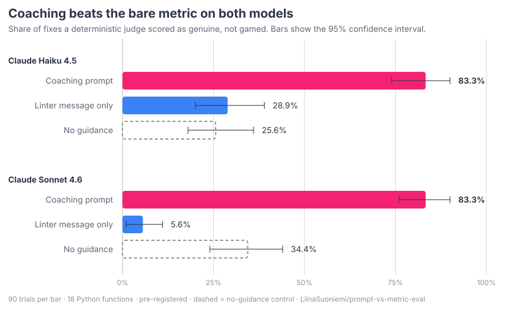

AI coding agents ignore long rule documents. A book's worth of coding advice in the context window makes them worse, not better.
Humans don't need it in their head. Repetition turns advice into habit, triggered by an easy-to-spot cue. Agents can't form habits.
A bare linter score is a target, and Goodhart's law applies: agents are very good at gaming a target when the target is all they are given.
Habit Hooks supplies the missing loop from outside. The linter finding is the cue; the coaching guide is the action.
The effect: better code, better agent performance on the next task, and fewer tokens — good code needs less context to work in.
Does it actually work?
Does coaching actually beat a bare metric, or do both just get gamed?
Liina Suoniemi measured it —
independently, and pre-registered before any model ran.

The bare metric gets gamed. Given only function is too complex (11 > 5),
Sonnet 4.6 produced a genuine fix in 5.6% of trials. It gamed the check in 79 of 90 — splitting branches into
helpers so the number fell while the code got no simpler.
The stronger model gamed it more, not less. Haiku 4.5 managed 28.9% on the same bare
metric. Capability does not buy honesty about a target.
Coaching fixed it on both. 83.3% genuine, and the confidence intervals do not overlap
the bare-metric ones on either model.
It is the phrasing, not just asking nicely. A control that said only "improve this code"
stayed at 25.6% and 34.4%.
18 real Python functions, one known smell each, 5 trials per function per condition, 90 trials
per bar. Scored by a deterministic judge — no LLM — checked against blind human labelling at 90% agreement,
Cohen's κ 0.85. Method, raw trials and the author's own list of what the judge can miss are all in
the repository.
How it works
habit-sensors <scope flags> | habit-mapper
habit-sensors runs your linters over the files in scope and emits findings.
habit-mapper groups them by smell, renders that smell's coaching guide, and sets the exit code from its severity.
Each sensor translates a tool's raw rule IDs into a tool-independent smell key — max-params, PLR0913 and friends all become too-many-parameters — so the guide is chosen by smell, never by which tool reported it.
Languages
Python ruff, deptry
TypeScript eslint, knip, ts-morph
PHP phpmd
Java pmd
Any line count, jscpd
Each is a separately installable plugin. A project's own config for a wrapped tool always wins — installing Habit Hooks never overrides preferences you already set.